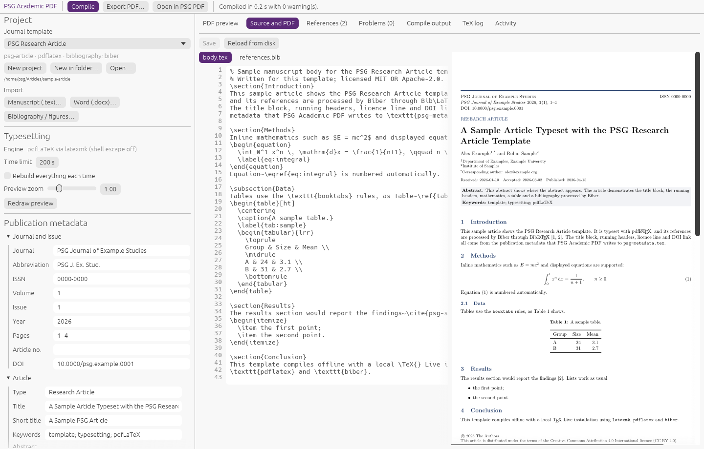

Professional PDF work and scholarly typesetting, on your own computer.
Two native desktop applications from Panorama Scholarly Group: PSG PDF, the everyday PDF workbench, and PSG Academic PDF, which turns accepted manuscripts into journal-ready PDFs. Offline, no account, open source.


Two tools, each built for one job
They are separate products, each with its own installer, updates, settings and uninstaller. Either works without the other, and they hand work to each other when both are installed.

PSG PDF
For anyone who reads, reviews, fills in, signs or prepares PDFs.
Still maturing: editing existing text works best on Latin script, OCR reads Latin script, and Word export does not keep the layout yet.
Sharp reading
Crisp at any zoom; continuous, single and two-up layouts, search, bookmarks, thumbnails and layers.
Comments in threads
Highlights, sticky notes, shapes, drawings and stamps, each with its own replies.
Signatures in many scripts
Typed signatures in Latin, Chinese, Japanese, Korean, Arabic and Hebrew, or a certificate signature.
Pages like cards
Reorder, rotate, insert, delete and crop; combine and split documents.
Protect and redact
Passwords and permissions, redaction, and removal of hidden information.
Convert and automate
Export to images, Word, HTML and Markdown; OCR; batch work with the bundled pdfcraft-cli.
PSG Academic PDF
For journal editors, production editors and authors preparing accepted articles.
Needs a local TeX (TeX Live or MacTeX). XeLaTeX, LuaLaTeX and Chinese, Japanese and Korean manuscripts are not supported yet.
Journal templates
PSG Research Article (numbered) or Humanities and Social Sciences Article (author-year, footnotes).
Bring the manuscript
A LaTeX manuscript, or Word (experimental, through Pandoc), with its bibliography and figures.
Checked metadata
DOI, ISSN and ORCID check digits and dates, checked as you type.
Clean references
BibLaTeX with Biber; finds duplicate keys, missing fields, citations without entries and unused entries.
Safe typesetting
pdfLaTeX through latexmk, sandboxed, shell escape off, cancellable.
Six interface languages
English, Simplified Chinese, Traditional Chinese, Japanese, Korean and German.
What they look like

Metadata checks (illustration)
- DOI
10.0000/psg.example.0001Well formed- ISSN
0000-0000Check digit OK- ORCID
0000-0002-1825-0098Check digit OK- Accepted
2026-02-30Not a real date
Get PSG PDF and PSG Academic PDF
Every release has both products, each in its own section, with SHA-256 checksums. Stable releases are marked Latest; betas are marked Pre-release, and the apps show Beta beside their name.
Stable release
For everyday work. Published only when both products built and passed their install tests on every platform.
- Windows installers (MSI) and portable .zip
- macOS universal DMG (Apple silicon and Intel)
- Linux .deb, .rpm, .AppImage and .tar.gz
Beta
Try the next version early. A beta is published from every change to the beta branch; if a platform is missing, its title says so.
- Same products, same file names with
-beta.N - Problem reports are very welcome
Build from source
# Rust 1.95 or newer $ git clone https://github.com/WENSHAO521/psg-pdf.git $ cd psg-pdf $ cargo build --release -p psg-pdf $ ./target/release/psg-pdf sample.pdf
# Needs TeX Live or MacTeX with latexmk and Biber to typeset $ git clone https://github.com/WENSHAO521/psg-pdf.git $ cd psg-pdf $ cargo build --release -p psg-academic-pdf $ ./target/release/psg-academic-pdf
$ cargo test -p psg-academic-pdf $ cargo test -p psg-pdf $ cargo xtask products check # both products' identities agree
Which one do I need?
PDF workbench
PSG PDF
Starts from an existing PDF and leaves it commented, filled, signed, reorganized or protected.
ExplorePSG Academic PDF
Starts from a manuscript and a journal template and makes a new, typeset article PDF with its metadata.
Explore| PSG PDF | PSG Academic PDF | |
|---|---|---|
| Opens | .pdf | .tex and .docx manuscripts, projects |
| Main tools | Viewer, comments, forms, signatures, page organizer, redaction, OCR, export | Templates, metadata form, bibliography checks, source editor, pdfLaTeX preview |
| Needs | Nothing else | A local TeX installation (pdfLaTeX, latexmk, Biber) |
| Together | When both are installed, PSG Academic PDF's Open in PSG PDF hands the finished article to PSG PDF for review. | |
Your documents stay on your computer. The source stays in the open.
No account, no tracking, and no update checks unless you ask. Found a problem or have an idea? Tell us.